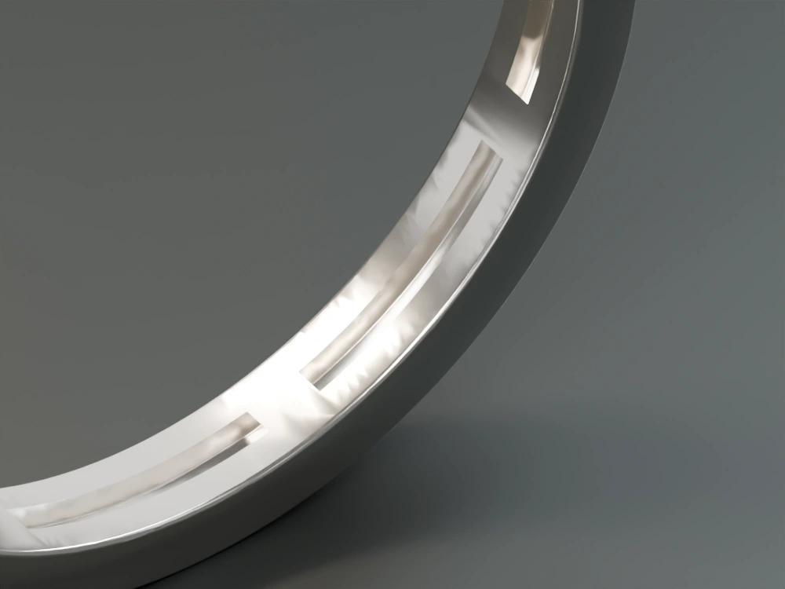

R&R DESIGN · B1
Облегчённый солитер
Размер 17, вставка Ø 6,00 мм. Вдоль внутренней поверхности шинки открыты шесть карманов. Между ними металл сохранён на полную ширину. Четыре лапки оставлены прямыми под закрепку.
Металл и внутренний профиль
- Габариты заготовки
- 19,72 × 23,59 × 7,00 мм
- Рассчитанный объём
- STL 190,256 мм³ · Rhino Brep 190,435 мм³
- Оценка массы
- 2,57 г Au 585 при 13,5 г/см³; 2,95 г Au 750 при 15,5 г/см³
- Сравнение с R2
- Экономия объёма 31,5% относительно полнотелой оправы R2 (277,547 мм³). Обе заготовки рассчитаны на размер 17 и одинаковый эталон Ø 6 мм.
- Боковые стенки карманов
- 0,749 мм, 48 замеров в STL
- Дно карманов
- 0,8090–0,8114 мм, 24 радиальных замера
- Верхний пояс корзинки
- Минимум 0,705 мм в 49 сечениях, по 72 радиальных луча в каждом
- Размер на внутренних кромках
- 16,9973–17,0007 мм, по контрольным направлениям сетки

Посадка круглой вставки
Проверена вся траектория при опускании выпуклого контрольного камня по −Y на 6 мм. Объём пересечения в движении и в конечном положении — 0,000000 и 0,000000 мм³. При смещении ниже на 0,020 мм возникает контакт с полкой, объём пересечения 0,06808 мм³. Каждая из четырёх лапок выступает над рундистом на 0,700 мм.
Проверка готовых файлов
У металла и вставки по одной замкнутой оболочке, нормали согласованы. Проверка CGAL на экспортированном STL выявила 0 самопересекающихся пар. Геометрия металла в Rhino 8 .3dm — редактируемое тело Brep (64 граней). Эталон вставки находится на отдельном слое.
Из центров 43 000 граней заготовки проведены лучи по нормали. Кратчайшая хорда 0,0904 мм, в точке X/Y/Z 0,000 / 8,496 / 0,959 мм. Хорд короче 0,60 мм — 137. Измерения стенок карманов и верхнего пояса приведены отдельно выше.
Точек с хордой короче 0,45 мм — 44. Кратчайшая находится у кромки светового окна под камнем. До печати требуется согласовать профиль этой кромки с технологом. Напечатанный образец, качество пролива, остаток металла после полировки и жёсткость шинки предстоит измерить в мастерской. Масштаб усадки согласуют по лигатуре и процессу. Перед закрепкой сверяют фактический профиль камня с эталоном.
Рассмотреть в 3D · Открыть в тепловой карте · Скачать комплект B1